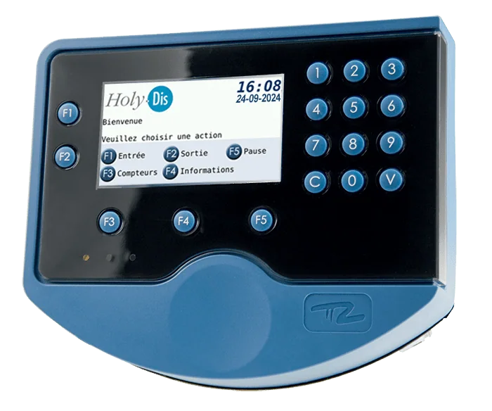

Contexte et Objectifs
Trigano dispose de plusieurs Unités Commerciales (BU) réparties géographiquement, chacune disposant de badgeuses pour le pointage des salariés. Cependant, avant le projet GTA, aucune marque ou format standardisé n'avait été choisi. Cette hétérogénéité posait de nombreux problèmes :
- Formats de pointage incompatibles entre les BU
- Gestion difficile des données RH
- Absence de contrôle interne sur les badgeuses
- Support totalement dépendant d'un prestataire externe
L'objectif du projet GTA est de standardiser et d'automatiser la gestion des temps à travers tous les sites Trigano, en mettant en place une solution moderne et maîtrisée en interne.
Mon Rôle dans le Projet
En tant que technicien support informatique en alternance, j'ai eu des responsabilités clés dans le déploiement des badgeuses :
- Réception et configuration des badgeuses : Lors de l'arrivée du matériel, je l'enregistre dans le système
- Attribution aux BU : Je définis la destination de chaque badgeuse selon les besoins de chaque unité commerciale
- Tests et validation : Je m'assure du bon fonctionnement de chaque équipement avant déploiement
- Documentation technique : J'ai créé une documentation complète du processus de configuration interne
- Support utilisateur : J'ai documenté la procédure d'installation côté BU pour les utilisateurs finaux
Défis Rencontrés
Le projet GTA a présenté plusieurs défis techniques et organisationnels :
- Technologie nouvelle : Les badgeuses Pyrescom sont une solution moderne, très différente des systèmes Windows classiques
- Courbe d'apprentissage : Apprentissage des spécificités de la plateforme et de ses interfaces
- Formation des utilisateurs : Accompagnement des équipes BU dans l'adoption de cette nouvelle technologie
- Gestion des pannes : Mise en place de procédures d'escalade compte tenu de l'impact critique sur la production
Méthodologie et Suivi du Projet
Le projet GTA utilise une approche structurée pour assurer la coordination et la traçabilité :
- Méthode RACI : Clarification des rôles et responsabilités de tous les acteurs (Responsable, Acteur, Consulté, Informé)
- Cartographie des badgeuses : Un fichier Excel de suivi centralise la localisation de chaque badgeuse, son statut et son historique
- Gestion des incidents : Tout dysfonctionnement est ouvert dans notre outil ITSM en priorité TRÈS URGENT car l'impact est critique
- Justification de l'urgence : Si les salariés ne peuvent pas pointer, cela génère du retard en usine et impact directement la production

Badgeuse TermodT4 - Exemple de matériel déployé
Apprentissages et Compétences Développées
Ce projet m'a permis de développer des compétences essentielles en gestion de projet et support informatique :
- Gestion de projet avec méthodologie RACI
- Documentation technique et support utilisateur
- Gestion des priorités et des impacts critiques
- Maîtrise d'une nouvelle technologie et capacité d'adaptation
- Suivi de parc informatique avec outils collaboratifs
- Communication efficace avec différents niveaux hiérarchiques